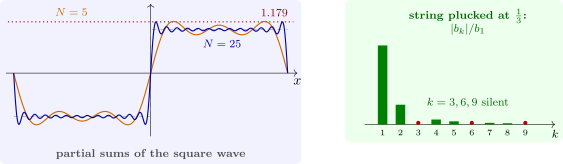

7.3 The Gibbs phenomenon
Near a jump, the partial sums converge pointwise but not uniformly. For the square wave, \(\operatorname {sign}x\) on \((-\pi , \pi )\), with series \(\frac 4\pi \sum _{k\ \text {odd}}\frac {\sin kx}k\), the partial sums overshoot to about \(1.179\) just to the right of \(0\), however many terms are taken (Figure 10). The peak of \(S_N\) is near \(x = \pi /N\), and as \(N \to \infty \) its height tends to \[ \frac 2\pi \int _0^\pi \frac {\sin s}s\,ds = \frac 2\pi \operatorname {Si}(\pi ) = 1.17898 , \] an overshoot of \(8.95\%\) of the jump of \(2\). Wilbraham found this in 1848; Gibbs described it again in 1899. The overshoot moves towards the jump and gets narrower, so it does not prevent mean-square convergence, but it matters wherever discontinuous signals are truncated in frequency, as in filtering and spectral numerical methods. Averaging the partial sums (Fejér’s sums) removes it.

Example 7.3.1. A string of length \(1\) plucked at \(x = p\) to height \(h\) has initial shape \(hx/p\) on \([0, p]\) and \(h(1 - x)/(1 - p)\) on \([p, 1]\), and sine coefficients \[ b_k = \frac {2h\sin k\pi p}{k^2\pi ^2p(1 - p)} . \] They decay like \(1/k^2\), since the shape is continuous with a corner. The harmonic \(k\) is absent whenever \(kp\) is an integer: plucking at the middle silences all the even harmonics, and plucking at one third every third one (Figure 10). Guitarists choose where to pluck to control the tone.
Questions on this section
Stuck on something here? Ask below and it stays attached to this topic.